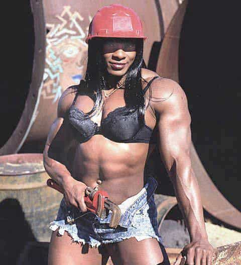

< < < Back
Ignore The Unwarranted Hate Of Trade Jobs – Return Of Kings
During the last few months of my junior year at high school we were all sent down to the guidance counsellor’s office to talk about our future, because sixteen and seventeen year old’s are noted and renowned for the wise plans they make for the rest of their lives. They were asking a group of people who unironically thought wrist cuffs and Blue October were the height of cool what they’d like to do for a living. I’m sure a lot of rock solid planning went on in the guidance counsellor’s office.
Mostly I think this was a system to vet kids – to find out which ones were college bound and therefore worth focusing on, and which future assembly line workers the teachers could safely ignore. My grades were good so I had a plethora of options (McUniversities) available to me. The counsellor repeated to the point of inanity that if I only worked harder, only took some extra courses, I could up my grades and make it into the *gasp* top tier schools! Of course top tier essentially means most expensive so instead I spent that summer finding out which school was highest ranked in which also happened to be the cheapest. I thought I was being smart by getting the most bang for my buck. Like many men of my generation I was an idiot and didn’t fully comprehend the sheer waste that is modern university; though to be all Millenial and put the blame on someone else, nobody really told me the truth about them.
Literally the only real reason left for men to go to university
A guy who still is a good friend of mine, whom I’m giving the pseudonym Andy, got a different reception in the counsellor’s office. Andy was a farm kid whose mom had split when he was six. He was abrasive, not academically intelligent but smart in every other respect. Andy was not a stunningly handsome dude, so he did not have a single girlfriend in his three years of high school even though there was enough trash in mini-skirts to be picked up. In short, Andy was a high school loser. His grades sucked and he knew he wasn’t college bound. He did however, have an actual plan unlike most of our class, many of whom at this very moment are turning into real world losers (see: me). He asked the counsellor about trades. The counsellor, who had spent nearly a half hour with me trying to convince me to bust my ass to get into McGill, opened a drawer in her desk and shoved a few pamphlets into Andy’s hands before showing him the door.
Thankfully Andy was liked by Mr. C, arguably the best teacher in our school. Mr. C asked us all in class what our plans were, showing polite interest in us university kids and real interest in the kids who said military or RCMP (Royal Canadian Mounted Police). Andy said he wanted to work a trade but the counsellor didn’t help him out. Mr. C asked if Andy wanted to meet a guy who ran his own plumbing company. Andy said yes and spent that summer working for the plumbing company. His grade 12 year he continued to work Saturdays on the boss’s skeleton crew and even days when school was off. While most of us high school ‘winners’ were barely making 400 CAD a month working cashier or fast food jobs in anticipation of the tens of thousands of dollars of debt we’d all soon be taking on (spending most of our earnings on stupid crap), Andy saved nearly six grand.
“I like can’t wait to get my degree or whatever so I’ll totally never have to waitress again”
By the time the September after high school graduation rolled around Andy could have paid a huge chunk of his student debt before he took one step through the front doors of the university. Instead he went full time to the plumbing company, which sent him away to trade school (no charge) and today he makes nearly 30 bucks an hour. He is only 22. My mom, a nurse who went to university and has worked in her field since she was 21, barely makes 40. My dad, a small business owner, is subject to the whims of the economy. Andy suffers no such worry because, no matter how terrible times get, someone always needs their toilet fixed.
While most of my class are going to be struggling with their student debt until they’re thoroughly middle aged (and probably longer), Andy need only save up six months salary to attend most schools debt free. And being a single guy with no baby mommas to leech off him or crippling vices like drinking, drugs or gambling, all Andy’s earnings are 100% pure gravy. He bought a small house which is nearly paid off, and his grandma died last year and left him her house (probably from guilt over her daughter abandoning him, or so the ‘stupid’ Andy confided to me) so now that small house is being rented out for additional income.
22 years old. Making roughly 55,000 a year, with guaranteed raises as he goes to school and gains more qualifications and certificates – which the company also pays for. Owns two houses, getting nearly 1200 in rent from one of them a month. That’s Andy the loser.
Trades. If you’re going to work, trades. Trades trades trades. You want to get a university degree? Fine – just get a trade first.
I did it the opposite way, wasted my time in university like a lot of young men today are doing and will do in the future. No, education in and of itself is not a bad thing and the ideal society would try to educate its population to the highest level possible. But we don’t live in ideal societies. University is far too expensive to pursue just to round out your life experience. You are not guaranteed a job with any degree. And even if its costs were reasonable the universities of today are almost anti-education. Indoctrination toward politically correct liberal ideals in non-STEM courses is rife. Courses are pathetically simple and hardly challenging to the intellect. It’s quite easy to not go to a single class and still graduate with high grades; I’d know. So much for ‘education’.
The only real redeeming factor of university is the bevy of sex one could have with girls freshly emancipated from the tyranny of mommy and daddy. In fact, the sheer buffet of classless, easy women eager to prove their independence by letting you use them for sex is the pretty much the only reason any man should be attending universities nowadays – unless you’re going to a top tier school to make contacts. Yet as the west becomes poorer and poorer and the boomer wealth fades even sex with Freshwomen, that sole redeeming factor, will dry up as mommies and daddies can’t afford to send their princesses en masse to slutty boot camp.

Pictured: Your daughter’s education
The stigma against trades in the popular conscience is bizarre and unwarranted. Plumbers and carpenters are portrayed as losers; fat, balding weirdo’s who don’t know how to pull up their pants and are probably drunk on the job – though to be fair, there are a lot of blue collar workers who work while messed up on something (though it’s not like that isn’t the case in every single job). Maybe that cliché was bang on once upon a time but nowadays you can find all sorts of smart, classy sumbitches working in trades, from university grads to body builders. Men go where the money is, and increasingly a lot of the money is in trades.
Of course, there are a few real concerns that you need to ponder about trades should you choose to enter them:
It Is Not Glamorous
This I think is where most of the social stigma comes from. We in the west live still live in a society which values above all else status from both money AND what you do for work. For all the money that Andy earns, his job is literally shitty. He deals with other people’s excrement for a living. Plus all those other fun things people flush down the toilet – condoms, tampons, chicken bones etc. You may not want to become a plumber if you have any sort of faith in humanity. What you find in a septic tank will forever destroy all notions of human nobility in your mind. Tradesmen do not get the glitz of a musician or artist, even though less then 5% of those two groups are capable of even feeding themselves for a living while nearly every working tradesmen can put supper on the table for a big family without worry. You’re not going to be waltzing around the club impressing chicks by dropping the fact that you work in HVAC for a living. Of course, if you’re actually telling chicks you are trying to ONS what you do for work you’re kind of doing it wrong in the first place.
You probably shouldn’t peacock your profession in the club either
On the plus side, the main core of people who actually care about how glamorous someone’s job is tend to be female and usually reside within the 12-21 year old range. Their opinions don’t matter since they’re losers once their sex appeal wears off (which is unnaturally fast for today’s gals) and for the most part they usually change their snooty attitude pretty quick once they get out into the real world. You can physically see jealous lust in the eyes of chicks who wouldn’t give Andy the time of day back in high school when they learn that he owns two houses, pool and hot tub included on his main pad, and pulls down more money in one year then they will earn in three – and that’s if they manage to keep their job. In Andy’s town there’s not a lot of glamorous men with glamorous jobs which can pay the bills, and he’s been getting a lot of overtures from younger girls who couldn’t afford to go to university and are stuck being secretaries and waitresses. Poverty truly is the great equalizer.
It’s Dirty And Dangerous Work
I’m working on getting my electricians certification’s. I could earn more as a plumber but I didn’t want to spend most of my day working in filth. Turns out you pretty much do no matter what you do your trade in. I’ve had to wriggle into crawlspaces with two feet of height, full of rats and mould and all other sorts of rot just to splice a wire together. A guy I worked with straight up got attacked by a feral cat when he poked his head into an attic. Even the most well kept of lived in buildings accumulate certain amounts of filth in their nooks and crannies, and guess where the majority of tradesmen spend their time working?
Note how I said the most well kept; working in trades, you quickly begin to think that either most people are slobs, or that you only work in the houses and buildings of slobs. Recently we went to work on houses on an Indian Reservation. The power had shorted out in one. We went down to the basement to see what was wrong and the smell practically knocked us out. It turned out that their toilet had stopped working a few months before hand, so they had the genius idea of tearing it out so they could poop directly down the pipes Muslim style. The accumulated excrement had shorted out the wiring.
Just once I’d like to go work in a nice basement like this
There’s no real plus side to this part of trades. There’s always a chance that working as a roofer parts of it are rotted and you could fall through. There’s always the chance that, even if you’re doing a relatively clean job like working on a construction site, a cinder block could tip and tumble onto you, or some idiot could accidentally flip on the breaker while you’re wiring, or a million other things. Trades are not comfy – there’s a reason you’re making killer dough working them.
It’s A Manly Profession
And by manly, I mean people are pissed off and yelling most of the day. A slight exaggeration, sure, but you have to develop some thick skin pretty quick working in trades. There’s no shortage of things that you can do wrong and no shortage of people who will immediately point out what an idiot you are for doing it wrong. Especially as a young guy, the maxim that shit flows down hill is in full effect. Much like in the trenches, any and everything is said without consideration on the job site. If you can’t handle ribbing about your sexuality, your race, your religion or simply cannot listen to comprehensive, personal knowledge of your mother’s genitals from numerous men – including your boss, if you screw up big enough – then working in a trades environment will be torturous for you.
On the plus side, most men are good about leaving their problems at the job site. You aren’t going to have a lot of sissy boys or idiots working intimately with you. Every site and company tends to have a certain number of goats (hopefully not you) but these idiots are usually shuffled off to the side doing dummy work where they can’t do too much harm to your real work efforts. And if they’re exceptionally bad they’re usually hounded off the crew pretty quick. Shoddy work hurts the reputation of the crew, which hurts everyone working for it – bad rep means no contracts means no pay. There are anti-discrimination, please-hold-my-hand-government type laws someone could attempt to hide behind (at least here in Canada) but anyone who tried that would soon find themselves completely ostracised in the company or on the site; only the most masochistic person would endure the bile of dozens of men who think that this person is trying to ruin their meal ticket.
It’s Long And Hard Work
Tradesmen don’t spend 8 hours a day in a comfy climate controlled office, sitting down at their desk slowly typing out an e-mail while keeping Return Of Kings tabbed until their boss walks away. You’re out in the elements come rain, snow or shine. Depending on where you live and what trade you work you could be spending several hours a day just driving to and from the job site. Unlike those lazy road crews which chop up half of the country’s main highways and then go on a three month smoke break, if a necessary task isn’t completed when the bell rings you can’t always just shut down and go home; 12-14 hours days are not uncommon. You’re moving, stretching, bending all the time, climbing and balancing and hanging off things to do your work. Even if you’re in reasonable shape it can be exhausting. Again, there’s a reason why you’re being paid so well. You earn your pay cheque.

Obligatory sexy picture dealing with the article’s theme
In Conclusion
Trades can be difficult work at times but they’re hardly the loser occupations as portrayed in the media. Quite the opposite; I know more losers with an undergraduate or Masters degree then ones with certificates in things like welding or water treatment. And a trade is nearly guaranteed to give one a stable job for life, something which has been taken for granted by many people for a long time and which is steadily becoming rarer.
Unlike the overly glorified, assembly line like work done in offices you cannot just fire competent trades people and replace them with low tier, unskilled immigrants. It’s one thing to lay off people who push buttons and move paper so you can replace them with someone who does the job 40% less effectively for 40% of the pay; if the toilets aren’t flushing properly and the heat only comes on half blast, that affects the boss. If a newly constructed building is falling apart only five years after it’s constructed, that affects the boss’s safety – not to mention his pocket book. And when it comes to the bosses comfort, money and safety, no expense shall be spared. You should be the one receiving that expense.
We’re quickly nearing a point where the majority of work can (and probably will) be done by computers and automated processes. To eliminate humans in trades would require a revolution in robotics technology that is likely still centuries away. At least for the 21st century the world still needs competent plumbers, carpenters, welders, and the other occupations that build and keep society running. Ignore the stigmas. Get in one, learn it and work hard. You’ll be set for life.
Read More: The Advantage Of Being A Late Bloomer


{kind=link}
{kind=link}
{kind=link}
{kind=link}
{kind=link}
{kind=link}
{kind=link}